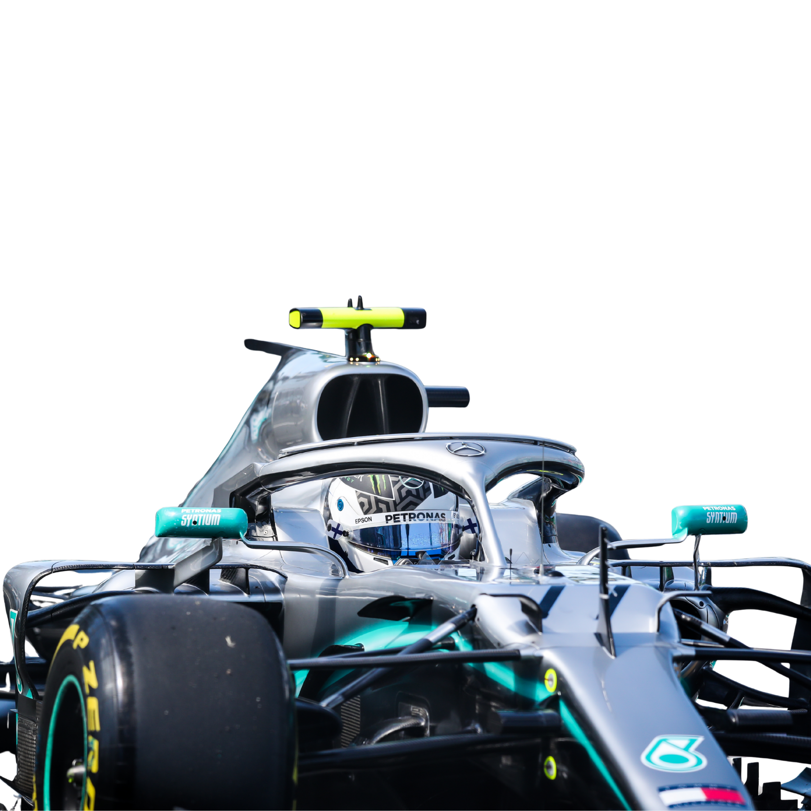

Formula 1 Through Data —
A Story of Speed, Glory,
and Malaysia's Place in it
"6 continents. 30+ countries. One sport."
F1 has raced across 6 continents and
over 30 countries since 1950.
The gold star marks Sepang —
Malaysia's home on the world stage.
Hover any marker for circuit details.
"More than half of all F1 races
have been run on European soil."
Born at Silverstone in 1950, Europe dominates F1's calendar. Circuits like Monaco and Monza are tourist destinations — a commercial advantage Sepang never had.
"Britain has won more titles than
the next two nations combined."
Great Britain leads with 20 titles,
driven by seven-time champion Hamilton.
Germany follows with 12, Brazil with 8.
Hover any country to see the count.
"Every era has a king — but none
has reigned like Mercedes in the 2010s."
Hover any cell for the exact win count.
Empty cells = zero wins that decade.
Win share per season since 1950,
normalised for direct comparison.
Note: tall 'Others' bar before 1970
reflects F1's early diversity.

"Starting from pole gives you the best chance
— but the grid is not destiny."
Silverstone qualifying times, 1990–2025
Does where you start determine where you finish?
"8 points. 22 rounds. The most disputed title in modern F1."
Lewis Hamilton and
Max Verstappen swapped the lead
three times across 22 rounds.
Hamilton led until a controversial safety car
gave Verstappen fresh tyres and one lap.
He overtook. He won.
Hover any point for round details.
"From Schumacher's defiance
to Verstappen's farewell —
19 races, 19 stories."
Hover any row for details.
"Malaysia left at a decade low.
Since then, F1's audience has nearly doubled."
"F1 is bigger. Malaysia is richer.
The timing has never been better."
Malaysia left F1 in 2017 because
Sepang could not fill its seats.
Three things have changed since then.
F1 has exploded globally.
Viewership, attendance and revenue
have all hit record highs since 2017.
Malaysia has fully recovered.
Tourism receipts hit USD 22.4B in 2024,
matching the pre-COVID peak.
The hosting fee is less than 0.4%
of annual tourism earnings.
The economics now make sense.
A new generation of fans — driven
by Drive to Survive — are hungry
for live F1. Southeast Asia has
no race since Singapore dominates.
Malaysia is the natural candidate.
1995–2020: World Bank (ST.INT.RCPT.CD).
2021–2024: DOSM Tourism Satellite Account.
Data sources: Kaggle F1 World Championship Dataset
(Rohan Rao, 2021, accessed April 2026) ·
World Bank Tourism Receipts — data.worldbank.org
(ST.INT.RCPT.CD, accessed May 2026) ·
DOSM Tourism Satellite Account 2021–2024 —
dosm.gov.my (accessed May 2026) ·
Formulapedia F1 Statistics — formulapedia.com
(accessed April 2026) ·
GPDestinations — gpdestinations.com (accessed April 2026) ·
The World Data — theworlddata.com (accessed April 2026) ·
Wikipedia — Malaysian Grand Prix (accessed April 2026)
Author: Beh Kai Ying | Unit: FIT2179 Data Visualisation 2 | Institution: Monash University Malaysia | Submitted: 2026
F1 logo used for academic purposes only.
Formula 1 is a registered trademark
of Formula One Licensing BV.